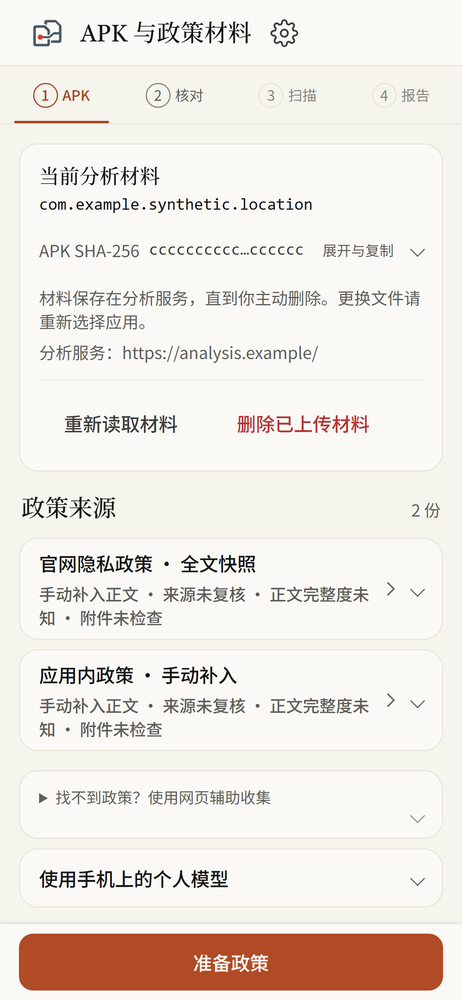
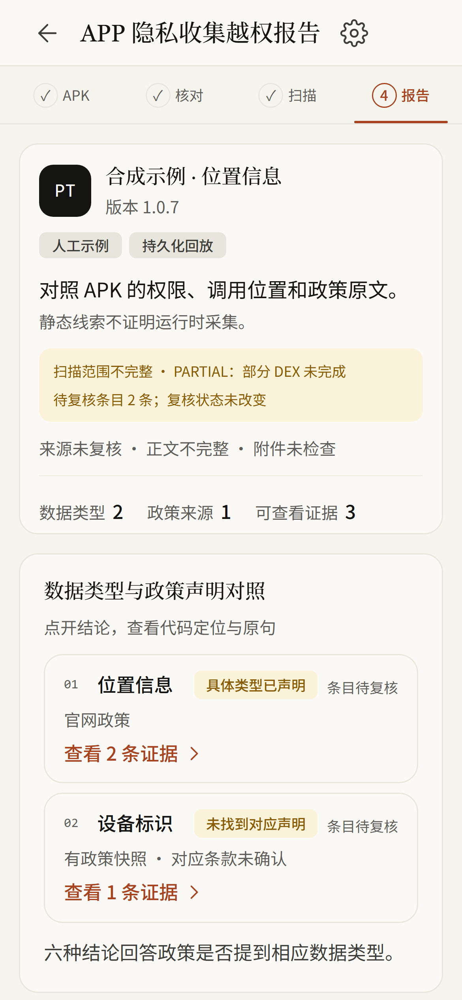

作品评审 · 专家版 / Expert review · 2026
Android 客户端 × 静态证据 × 政策声明。只对照，不判定合规、安全或实际采集。
10 页评审 PPT · 学术论文风重排版 · 采集基线 f81ca20 · 2026 年 10 月 23 日
目录 / Outline
§1 · 定位 / Positioning
定位不是结论，而是边界：本材料证明“线索能被定位、能被复核”，不证明“应用实际采集了什么”。
§2 · 创新 / Innovation
① 代码位置
synthetic/LocationFeature.java
LocationFeature#readGpsLocation:12
locationManager.getLastKnownLocation(
LocationManager.GPS_PROVIDER);
rule · android.location.last-known.gps
② 政策原句
我们访问位置信息，用于提供地图功能。
原文位置 [0, 18) · 按 Unicode 码点计数 · 半开区间
图 1：同一份证据同时挂代码位置与政策原句；两边都能自己走一遍，切片与 excerpt 可复算。
代码位置与政策原句，都能自己走一遍。
事实、声明、推断分开记录；UNKNOWN 保留。
12 个场景、三方案同材料；先冻真值再跑算法。
§3 · 关键实现 / Implementation
图 2：材料进来，隔离容器里解析，生成证据与候选，一致性引擎对照，最后出报告与回放；未知 APK 只在隔离容器里解析，扫描结束删除副本。
隔离 / CONTAINER
非 root 65534:65534
network none · 只读根
cap-drop ALL · PID 32
静态 / STATIC
Androguard 4.1.3
AXML + 全部 classesN.dex
缺 JADX → 字节码兜底
政策 / POLICY
码点半开区间 [start,end)
切片 == excerpt
旧快照不覆盖
引擎 / ENGINE
FastAPI · Pydantic
PostgreSQL outbox
mTLS Runner · 不持 socket
§3 · 客户端 / Android App


开发版；2026-10-23 采集于基线 f81ca20，390×844 DPR 3，固定合成材料。Chromium + 受控 native bridge，不是真机，也不是 APK 扫描结论。
§4 · 真实成果 / Results
1578
工程门禁通过数；同一轮还有 179 skipped、e2e 65、Web 单测 111，生产构建通过。
40 / 0 / 0
部署验收 pass / fail / skip
12 / 12
受控场景状态一致
11 / 12
H 矩阵通过（H12 失败保留）
† 工程门禁与部署验收绑定 65b49f7（2026-10-21）；受控评测绑定 b0b3c74；H 矩阵绑定 2626152。四类数字分开报，不合成一个“准确率”。
§4 · 结果与边界 / Bounded results
| 类别 | 结果 | 绑定 / 边界 |
|---|---|---|
| 工程门禁 | 1578 passed / 179 skipped；e2e 65；Web 111 | 65b49f7 · 2026-10-21 |
| 部署验收 | 40 pass / 0 fail / 0 skip；四入口 4/4 | 65b49f7；唯一既有豁免 dedicated-scan-host-verification |
| 受控评测 | 12/12 状态一致；API 4/12；权限+关键词 2/12；36 行 | b0b3c74；名义状态对照；P/R/F1 = N/A |
| H 矩阵 | 11 通过 / 1 未通过；H12 失败复现 2 次 | 2626152；J × splits × 手机模型 |
| 真实 App | GKD v1.12.1（1 样本）：6 证据 / 3 行为 / 2 声明 / 3 问题 | 2026-10-09；3 条结论均 INSUFFICIENT_EVIDENCE，本轮未重扫 |
表 1：五类结果与各自绑定；受控场景是自建源码场景的名义状态对照，不推广为真实 App 的检测准确率。
未命中规则 ≠ 没有隐私行为；证据不足，也要写进报告。离线包 24 成员 / 18 行对照绑定 9e56771；六场景绑定 323780c9。
§5 · 原创贡献 / Contribution
边界与缺口同页保留：H12 失败、前端开发版、真实 App 全局准确率未做；不把线索当行为，不把受控当真实。
结语 · 材料与复核 / Close
先把证据摆出来，
再谈结论。
— PrivacyTrace 评审材料 · 2026-10-23
线索不等于行为。受控结果不是真实 App 的准确率。未知就写未知。